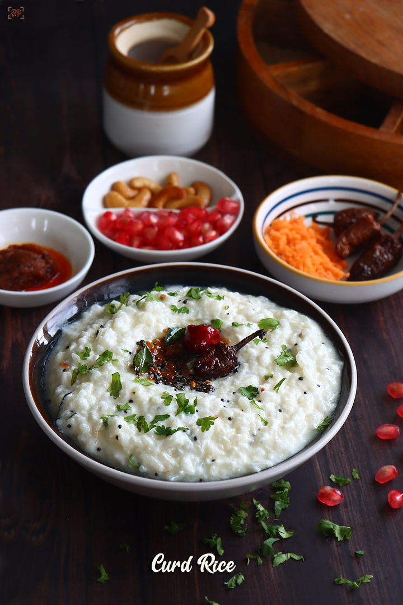

Curd Rice

Indian Dish Consumed on lunch or dinner
Made with rice and curd this dish extremely simple and easy to make
Ingredients
- Rice
- Curd
- Cumin seeds
- Green Chilies
- Curry leaves
- Peanuts
- Salt
- Ghee
Steps
- Steam cook the rice in a cooker , after it is cooked wait until it cools down
- After it cools down , mix curd with the rice
- take a pan , put some ghee in it , let it become hot
- now put curry leaves , green chillies, peanuts ,cumin seeds and salt and soute it for 2-3 minutes
- now put this mixture on the rice and curd mixture
- Mix it well
- Tada your Delicious curd and rice is ready!!!